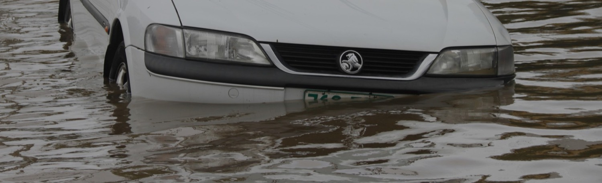

Monitoring
Tracking dust and asthma around the Salton Sea
Imperial Valley residents document the dust that rises as the lakebed shrinks.

For families living along the rail corridor in south Oxnard, the air had long felt like a fact of life — diesel trucks idling near the elementary school, a faint haze on still mornings, more inhalers in more backpacks each year. What residents didn't have was a way to prove it.
The nearest official air monitor sat miles away, on the other side of the freeway. On paper, the neighborhood's air looked unremarkable. On the ground, parents and clinic staff knew otherwise.
Working with the Central Coast Alliance, Tracking California helped the community set up a network of fifteen low-cost air sensors — on porches, fences, and the roof of a community clinic. Volunteer "trackers," many of them parents, were trained to maintain the sensors and read the data they produced.
Within a few months the readings told a clear story: fine-particle pollution spiked during the early-morning truck rush, exactly when children were walking to school. Patterns the regional model had smoothed over were suddenly visible, block by block.
“For years we were told the air was fine. Now we have our own numbers, from our own street. When you can point at the data, people in suits stop talking over you.”
The coalition paired its sensor data with Tracking California's asthma and traffic-exposure data explorers, building a side-by-side picture of pollution and the health burden it tracked with. That combination — community-collected readings backed by validated public health data — proved hard to dismiss.

Residents brought the maps to a regional air-district hearing. Within the year, the district agreed to install a permanent monitor in the neighborhood and to study rerouting early-morning truck traffic away from the school. It is a modest win — but it began with residents who decided their own air was worth measuring.
The Oxnard network is one of a growing number of community monitoring efforts across the state. Explore more of our community work →
Related stories

Imperial Valley residents document the dust that rises as the lakebed shrinks.

A Central Valley network logs drift incidents and routes them to the people who can act.

Youth fellows learn to collect, read, and act on environmental data in their own towns.